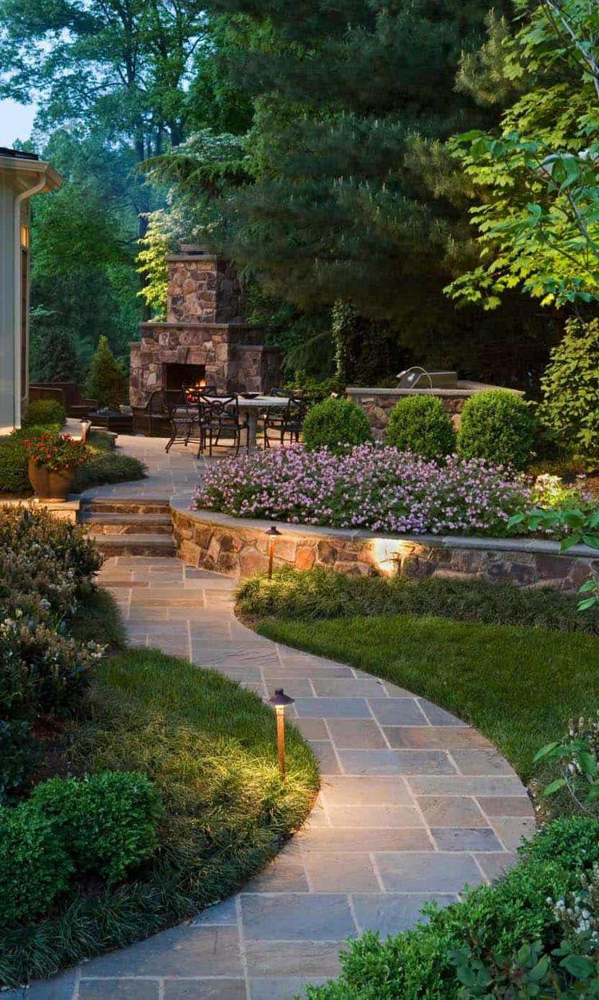
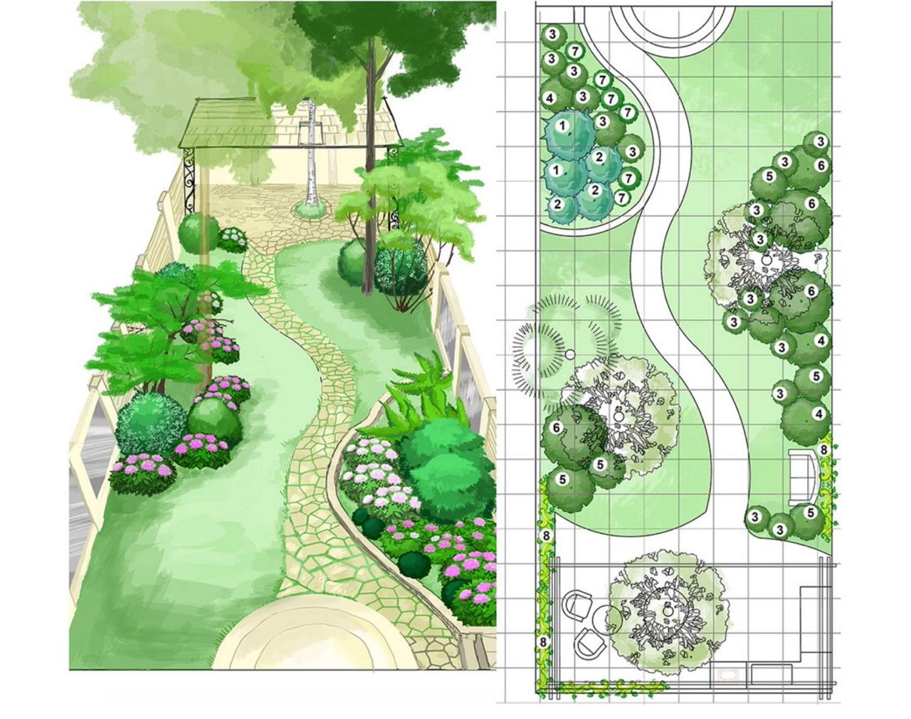
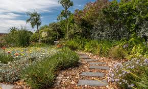
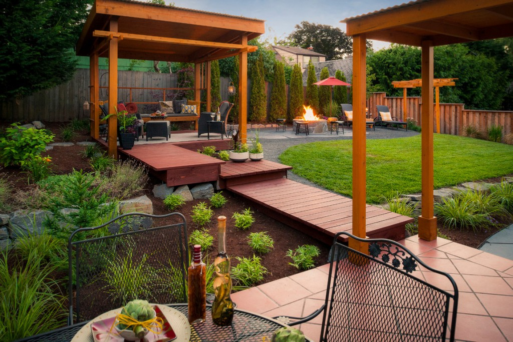

Garden planning and design:

A beautiful garden takes time, effort, money and maintenance. Starting with a good garden plan can help cut down on all of those things. Thinking about your yard or garden before getting to work can create a unified area that accents your home and provides years of enjoyment.
Consider the factors that will affect how your garden will grow sunlight, shade, wind, drainage, access to water, foot traffic patterns and the balance between lawn, shrubs, flowers and vegetables. A landscape analysis that considers these and other factors is an important first step in garden planning.
Start With A Map:

Before you know what you want, you need to figure out what you have. Start by drawing a map of your yard with existing trees, shrubs, slopes, patios and whatever else is out there. The map can be as formal (a scale version on graph paper) or casual as your need for detail dictates, but the more accurate it is, the more thorough your garden plan will be.
Make note of the factors noted above that influence the kind of plantings that will follow. Locate areas with full sun and partial shade. Indicate places that are sheltered from the wind and where the best soil is. Also note the paths people take to get from one place to another. These might be actual paths of brick or stone, or just the routes that commonly get used. Are there places the kids like to play use? And consider the viewing angles when placing plant groups and gardens. Where will people be when they are admiring your work?
Water sources are another important detail to add to the map, whether that means underground sprinklers or simply a spigot. Elevations are also important. Does the land slope towards its borders or rise in the center? Generally, you’ll want drainage to move away from your home, not toward it.
Choosing Plants:

There are several things to consider when picking out plants. Budget, ease of care, compatibility with neighboring plants, aesthetics and size all come into play in garden design.
When choosing trees and shrubs, consider their height and width at maturity. A sapling takes up a lot less room than a full-grown tree. Not only do trees need adequate space and resources, they can be damaging to houses and sidewalks if planted too close. Large trees and shrubs can shade out other plants, so carefully decide the size and location suitable to your plan.
Hard Landscape Features:

Patios, decks and pathways make the garden usable and provide space for you to enjoy all your hard work. A spacious sitting area (one where you can push the chairs back without them reaching the edge) is the perfect spot to enjoy the garden. A variety of deck plans, some using eco-friendly materials, can be found here.
Think about the placement of paths. In frequently traversed areas, paths should be at least 3 feet wide and travel as direct a route as possible. Decide what type of stone, brick, gravel etc. matches your home and yard and is affordable. Paths can be as wide as your space allows. Keep in mind that they will get functionally narrower as plants spill over the edges from surrounding borders.
The final test of your garden design is to settle in to it. Wander the paths, sit under the shade trees, pause to admire the flowers and features. You’ll know you’ve succeeded if you feel a sense of pride, a feeling of peace and an overwhelming surge of accomplishment